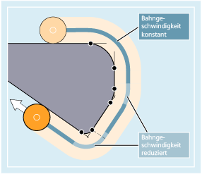
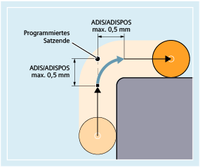

Weitere Informationen
Bahnsteuerbetrieb G64 und G646
Im Bahnsteuerbetrieb fährt das Werkzeug bei tangentialen Konturübergängen mit möglichst konstanter Bahngeschwindigkeit (kein Abbremsen an den Satzgrenzen). Vor Ecken und Sätzen mit Genauhalt wird vorausschauend gebremst (LookAhead).
Ecken werden ebenfalls stetig umfahren. Zur Verringerung des Konturfehlers wird die Geschwindigkeit unter Berücksichtigung einer Beschleunigungsgrenze und eines Überlastfaktors entsprechend reduziert.
| Hinweis |
Wie stark die Konturübergänge verschliffen werden, hängt von der Vorschubgeschwindigkeit und dem Überlastfaktor ab. Der Überlastfaktor ist im MD32310 $MA_MAX_ACCEL_OVL_FACTOR einstellbar. Beim erweiterten Bahnsteuerbetrieb zusätzlich von der Anzahl der IPO-Takte (MD20493 $MC_G64_NUM_IPO), in denen der Überlastfaktor wirksam ist. Durch Setzen von MD20490 $MC_IGNORE_OVL_FACTOR_FOR_ADIS werden Satzübergänge immer unabhängig vom eingestellten Überlastfaktor überschliffen. |
Um einen unerwünschten Stopp der Bahnbewegung zu vermeiden (Freischneiden!), sind folgende Punkte zu beachten:
Hilfsfunktionen, die nach Bewegungsende oder vor der nächsten Bewegung geschaltet werden, unterbrechen den Bahnsteuerbetrieb (Ausnahme: Schnelle Hilfsfunktionen).
Positionierachsen fahren immer nach dem Genauhaltprinzip, Positionierfenster fein (wie G601). Falls in einem NC-Satz auf Positionierachsen gewartet werden muss, wird der Bahnsteuerbetrieb der Bahnachsen unterbrochen.
Zwischenprogrammierte Sätze nur mit Kommentaren, Rechensätzen oder Unterprogrammaufrufen stören den Bahnsteuerbetrieb dagegen nicht.
| Hinweis |
Sind nicht alle Bahnachsen in FGROUP enthalten, wird es an Satzübergängen für die nicht enthaltenen Achsen häufig einen Geschwindigkeitssprung geben, den die Steuerung durch ein Absenken der Geschwindigkeit am Satzwechsel auf den durch MD32300 $MA_MAX_AX_ACCEL und MD32310 $MA_MAX_ACCEL_OVL_FACTOR erlaubten Wert begrenzt. Dieses Abbremsen lässt sich vermeiden, wenn man den vorgegebenen Positionszusammenhang der Bahnachsen durch ein Überschleifen aufweicht. |
Vorausschauende Geschwindigkeitsführung LookAhead
Im Bahnsteuerbetrieb ermittelt die Steuerung automatisch für mehrere NC-Sätze im voraus die Geschwindigkeitsführung. Hierdurch kann bei annähernd tangentialen Übergängen über mehrere Sätze hinweg beschleunigt und gebremst werden.
Vor allem Bewegungsketten, die sich aus kurzen Fahrwegen zusammensetzen, lassen sich durch vorausschauende Geschwindigkeitsführung mit hohen Bahnvorschüben herstellen.
Die Anzahl der NC-Sätze, über die maximal vorausgeschaut wird, lässt sich über Maschinendatum einstellen.

Bahnsteuerbetrieb mit Überschleifen nach Wegkriterium (G641)
Bei G641 fügt die Steuerung an Konturübergängen Übergangselemente ein. Mit dem Überschleifabstand ADIS (bzw. ADISPOS bei G0) wird angegeben, wie stark die Ecken maximal verschliffen werden dürfen. Innerhalb des Überschleifabstandes ist die Steuerung frei, den Bahnzusammenhang aufzulösen und durch einen dynamisch optimalen Weg zu ersetzen.
Nachteil: Für alle Achsen steht nur ein ADIS-Wert zur Verfügung.
G641 wirkt ähnlich wie RNDM, ist aber nicht auf die Achsen der Arbeitsebene beschränkt.
Wie G64 arbeitet G641 mit vorausschauender Geschwindigkeitsführung LookAhead. Überschleifsätze mit hoher Krümmung werden mit verringerter Geschwindigkeit angefahren.
Beispiel:
| Programmcode | Kommentar |
|---|---|
| N10 G641 ADIS=0.5 G1 X... Y... | ; Der Überschleifsatz darf frühestens 0,5 mm vor dem programmierten Satzende beginnen und muss 0,5 mm nach Satzende beendet sein. Diese Einstellung bleibt modal wirksam. |
| Hinweis |
Überschleifen kann und soll die Funktionen für definiertes Glätten (RND, RNDM, ASPLINE, BSPLINE, CSPLINE) nicht ersetzen. |
Überschleifen mit axialer Genauigkeit bei G642
Bei G642 findet das Überschleifen nicht innerhalb eines definierten ADIS-Bereichs statt, sondern es werden die mit MD33100 $MA_COMPRESS_POS_TOL definierten axialen Toleranzen eingehalten. Der Überschleifweg wird aus dem kürzesten Überschleifweg aller Achsen bestimmt. Dieser Wert wird bei der Erzeugung eines Überschleifsatzes berücksichtigt.
Satzinternes Überschleifen bei G643
Die maximalen Abweichungen von der exakten Kontur werden beim Überschleifen mit G643 durch das Maschinendatum MD33100 $MA_COMPRESS_POS_TOL für jede Achse festgelegt.
Mit G643 wird kein eigener Überschleifsatz gebildet, sondern es werden achsspezifisch satzinterne Überschleifbewegungen eingefügt. Bei G643 kann der Überschleifweg jeder Achse unterschiedlich sein.
Überschleifen mit Kontur- und Orientierungstoleranz bei G642/G643
Mit MD20480 $MC_SMOOTHING_MODE kann das Überschleifen mit G642 und G643 so konfiguriert werden, dass anstelle der achsspezifischen Toleranzen eine Konturtoleranz und eine Orientierungstoleranz wirksam sind.
Kontur- und Orientierungstoleranz werden eingestellt in den kanalspezifischen Settingdaten:
SD42465 $SC_SMOOTH_CONTUR_TOL (Maximale Konturabweichung)
SD42466 $SC_SMOOTH_ORI_TOL (Maximale Winkelabweichung der Werkzeugorientierung)
Die Settingdaten können im NC-Programm programmiert und dadurch für jeden Satzübergang anders vorgegeben werden. Sehr unterschiedliche Vorgaben für die Konturtoleranz und die Orientierungstoleranz können sich nur bei G643 auswirken.
| Hinweis |
Die Erweiterung um Konturtoleranz und Orientierungstoleranz existiert nur in Systemen mit vorhandener Option "Polynominterpolation". |
| Hinweis |
Für das Überschleifen unter Einhaltung der Orientierungstoleranz muss eine Orientierungstransformation aktiv sein. |
Überschleifen mit maximal möglicher Dynamik bei G644
Das Überschleifen mit maximal möglicher Dynamik wird mit MD20480 $MC_SMOOTHING_MODE in der Tausenderstelle konfiguriert:
Wert | Bedeutung |
|---|---|
0 | Vorgabe der maximalen axialen Abweichungen mit: MD33100 $MA_COMPRESS_POS_TOL |
1 | Vorgabe des maximalen Überschleifwegs durch Programmierung von: ADIS=... bzw. ADISPOS=... |
2 | Vorgabe der maximal auftretenden Frequenzen jeder Achse im Überschleifbereich mit: MD32440 $MA_LOOKAH_FREQUENCY Der Überschleifbereich wird so festgelegt, dass bei der Überschleifbewegung keine Frequenzen auftreten, die die vorgegebene maximale Frequenz überschreiten. |
3 | Beim Überschleifen mit G644 werden weder die Toleranz noch der Überschleifabstand überwacht. Jede Achse fährt mit maximal möglicher Dynamik um eine Ecke. |
Überschleifen tangentialer Satzübergänge bei G645
Die Überschleifbewegung bei G645 wird so festgelegt, dass alle beteiligten Achsen keinen Sprung in der Beschleunigung erfahren und die parametrierten maximalen Abweichungen zur Originalkontur (MD33120 $MA_PATH_TRANS_POS_TOL) nicht überschritten werden.
Bei knickförmigen, nicht-tangentialen Satzübergängen ist das Überschleifverhalten wie bei G642.
Keine Überschleifzwischensätze
In den folgenden Fällen wird kein Überschleifzwischensatz eingefügt:
Zwischen beiden Sätzen wird angehalten.
Dies tritt auf, wenn:
eine Hilfsfunktionsausgabe vor Bewegung im Folgesatz steht.
der Folgesatz keine Bahnbewegung enthält.
für den Folgesatz zum ersten Mal eine Achse als Bahnachse verfährt, die zuvor Positionierachse war.
für den Folgesatz zum ersten Mal eine Achse als Positionierachse verfährt, die zuvor Bahnachse war.
der Vorgängersatz Geometrieachsen verfährt und der Folgesatz nicht.
der Folgesatz Geometrieachsen verfährt und der Vorgängersatz nicht.
vor Gewindeschneiden der Folgesatz G33 als Wegbedingung hat und der Vorgängersatz nicht.
zwischen BRISK und SOFT gewechselt wird.
transformationsbedeutsame Achsen nicht vollständig der Bahnbewegung zugeordnet sind (z. B. bei Pendeln, Positionierachsen).
Der Überschleifsatz würde die Teileprogrammbearbeitung verlangsamen.
Dies tritt auf:
zwischen sehr kurzen Sätzen.
Da jeder Satz mindestens einen Interpolatortakt benötigt, würde der eingefügte Zwischensatz die Bearbeitungszeit verdoppeln.
wenn ein Satzübergang mit G64 (Bahnsteuerbetrieb ohne Überschleifen) ohne Geschwindigkeitsreduzierung überfahren werden darf.
Überschleifen würde die Bearbeitungszeit erhöhen. D. h. der Wert des erlaubten Überlastfaktors (MD32310 $MA_MAX_ACCEL_OVL_FACTOR) hat Einfluss darauf, ob ein Satzübergang überschliffen wird oder nicht. Der Überlastfaktor wird nur beim Überschleifen mit G641 / G642 berücksichtigt. Beim Überschleifen mit G643 hat der Überlastfaktor keinen Einfluss (dieses Verhalten kann auch für G641 und G642 eingestellt werden, indem MD20490 $MC_IGNORE_OVL_FACTOR_FOR_ADIS = TRUE gesetzt wird).
Das Überschleifen ist nicht parametriert.
Dies tritt auf, wenn:
bei G641 in G0-Sätzen ADISPOS=0 ist (Vorbelegung!).
bei G641 in Nicht-G0-Sätzen ADIS=0 ist (Vorbelegung!).
bei G641 beim Übergang zwischen G0 und Nicht-G0 bzw. Nicht-G0 und G0 der kleinere Wert aus ADISPOS und ADIS gilt.
bei G642/G643 alle achsspezifischen Toleranzen gleich Null sind.
Der Satz enthält keine Verfahrbewegung (Nullsatz).
Dies tritt auf, wenn:
Synchronaktionen aktiv sind.
Normalerweise werden Nullsätze vom Interpreter eliminiert. Wenn aber Synchronaktionen aktiv sind, wird dieser Nullsatz eingekettet und ausgeführt. Hierbei wird ein Genauhalt entsprechend aktiver Programmierung ausgelöst. Damit soll die Synchronaktion die Möglichkeit bekommen, gegebenenfalls zu schalten.
durch Programmsprünge Nullsätze erzeugt werden.
Bahnsteuerbetrieb im Eilgang G0
Auch für das Fahren im Eilgang muss eine der genannten Funktionen G60/G9 oder G64 bzw. G641 - G645 angegeben werden. Ansonsten wirkt die über Maschinendatum eingegebene Voreinstellung.